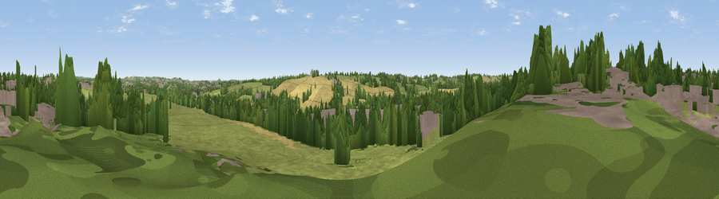

Viewpoint near West Hallam
#41734 in England · top 87% of its area beats it · near West HallamWhere it is
The exact computed spot (SK 43225 41125). Click the marker for map links.
The view, rendered

A 360° render of this exact spot computed from the terrain model, tree cover and land cover — summer colours, afternoon light, calibrated against photographs of famous viewpoints. Real trees, hedges and buildings will differ in detail.
The panorama
Grey silhouette: terrain skyline in each direction (720 bearings, Earth curvature and refraction included). Dashed green: skyline with trees (+15 m) and buildings (+8 m) as obstacles. Blue strip: how far the ground is visible on each bearing.
Where the view opens
Wedge length = distance to the farthest visible ground on that bearing (vegetation-aware). Rings at 10, 25 and 50 km.
What fills the view
43% grassland · 23% built-up · 22% woodland · 11% cropland
Angular shares of the visible panorama (visual magnitude), not map area. Landscape diversity 0.56 (0–1 Shannon).
Key numbers
More beautiful places nearby
The staircase of upgrades: each row has a higher view potential than everything closer. Driving times are estimates from straight-line distance, calibrated against real road routing — check an actual route before setting out.
| Place | Direction | Drive | Score |
|---|---|---|---|
| Viewpoint near Dale Abbey | SSE · 1 km | ~4 min | 37.5 |
| Viewpoint near Dale Abbey | S · 3 km | ~7 min | 43.0 |
| No Man's Lane | SE · 5 km | ~10 min | 65.8 |
| The Tors | NNW · 15 km | ~27 min | 68.9 |
| Alport Height | NW · 16 km | ~29 min | 73.9 |
| Viewpoint near Woodhouse Eaves | SSE · 27 km | ~44 min | 77.7 |
| Viewpoint near Mow Cop | WNW · 59 km | ~82 min | 78.9 |
| Viewpoint near Mow Cop | WNW · 60 km | ~82 min | 80.2 |
52.96575, -1.35788 · source: screening · position refined by local search. Computed location — check access rights before visiting.